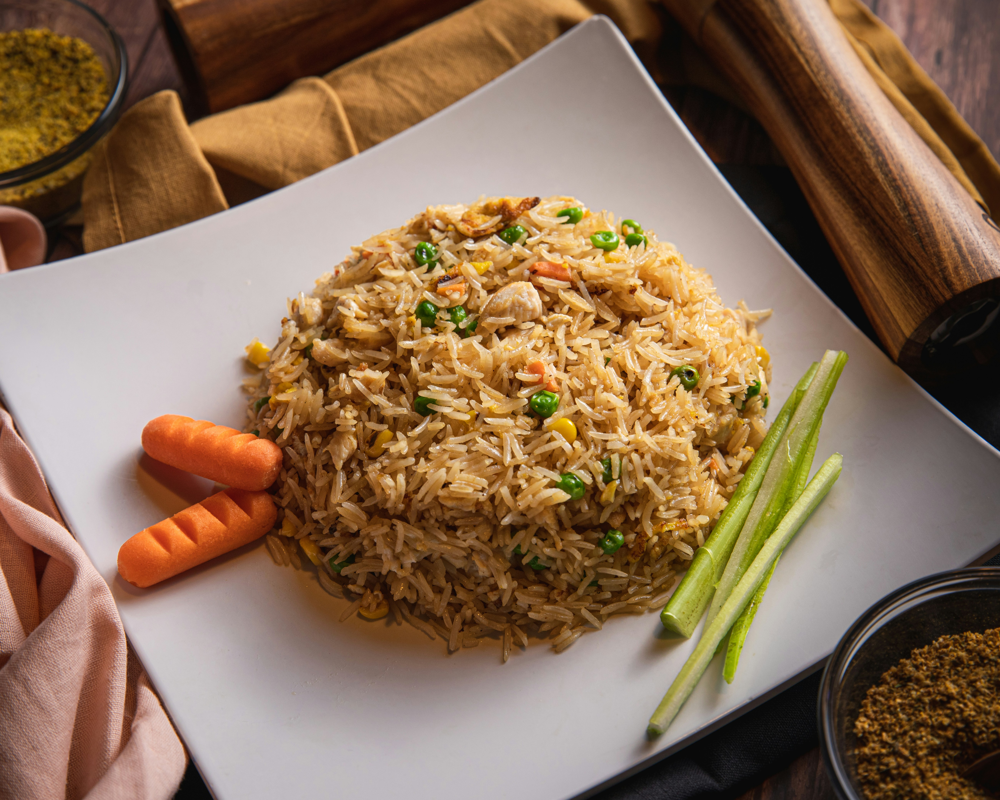

Fried Rice

Delicious and quick fried rice recipe.
Ingredients
- 2/3 cup of diced carrots
- 1/2 cup of frozen peas
- 1/4 cup of canned corn
- 1/4 cup of chopped celery
- 2 tbsp of vegetable oil
- 1 tbsp of soy sauce
- 2 tsp of sesame oil
- 2 large eggs
- 3 cups of refrigerated rice
Steps
- Season a wok with oil on high heat
- Pour in the eggs and season to taste
- Once the eggs have set and are halfways cooked, set it aside/li>
- Stir in the vegetables for 30 seconds
- Throw in the rice and mix in the soy sauce and sesame oil to taste
- Toss the eggs back in and cook for another minute
Homepage